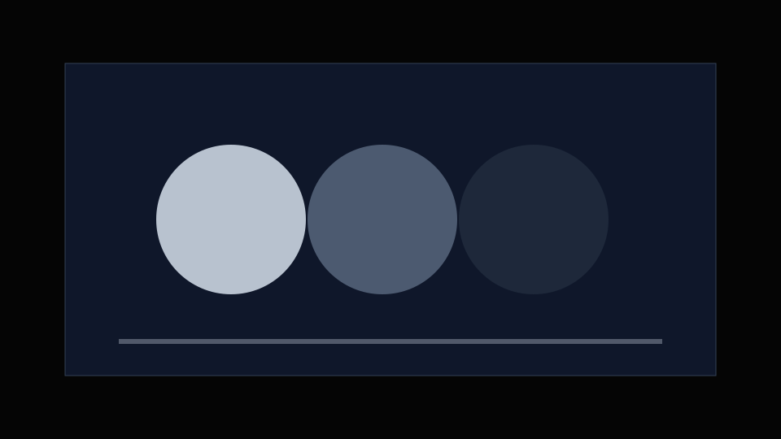
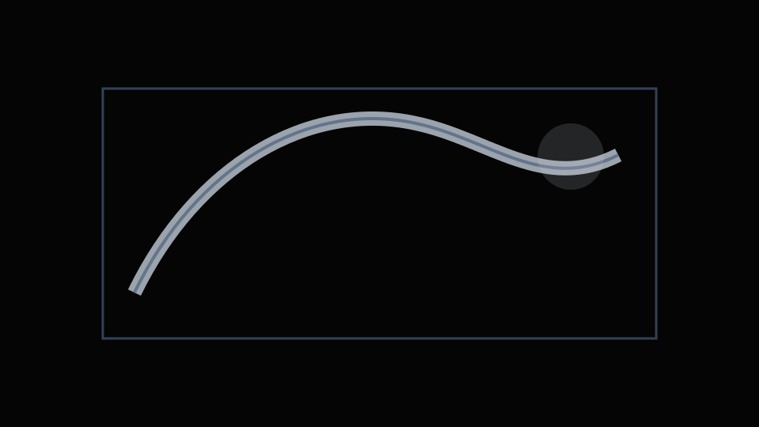
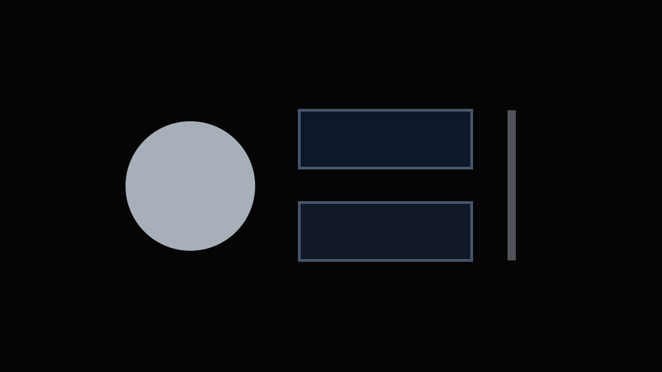

Add the company, product category, and manufacturing context.
Explain what the company produces, what this product is, where it is used, and why the project is relevant to an industrial or engineering-led employer.
Hero Project Framework / Industrial Product Communication
Add one concise sentence here describing the project, the industrial communication problem, and the value created for the company or customer.

01 / Context & Company Background
Explain what the company produces, what this product is, where it is used, and why the project is relevant to an industrial or engineering-led employer.
Describe who needs to understand the product, what information they require, and the customer-facing or internal context of the final material.
02 / Challenge
Clarify what was difficult to explain, what was missing from the existing communication, and why the problem mattered to engineering, sales, marketing, service, or customers.
03 / Workflow
Add how technical CAD was prepared, simplified, checked, or adapted for communication.
Add how visual hierarchy, materials, lighting, camera position, and product presentation were developed.
Add how motion, sequence, exploded views, or operating principles were communicated.
Add how the visual assets were adapted into communication formats and customer-facing material.
Add where the final deliverables were used and how they supported the intended audience.
04 / Best Visuals
Visual 01 / Primary Outcome
Replace with the single image that best communicates the quality, complexity, and industrial relevance of the project.
Visual 02
Add the second strongest final product or system view.
Visual 03
Add a visual that demonstrates technical thinking and communication clarity.

Visual 04
Add a visual showing how the work appeared in its final communication context.

Visual 05
Add one final visual that creates a memorable interview hook.
05 / Technical & Engineering Content
Exploded Views
Add exploded views, internal relationships, or construction logic.
Interactive Viewer
Add interactive or rotational product visualization where relevant.
Assembly & Maintenance
Add assembly, disassembly, maintenance, or operating-principle material.
Engineering Review
Add evidence of technical review and communication with engineers.
06 / Final Deliverables
Add catalogue or product-page output
Add rendering or animation output
Add presentation or product-film output
Add social or marketing output
Add exhibition or conference output
Add customer or internal communication output
07 / Engineering Collaboration
Explain what information was received and what technical accuracy needed to be preserved.
Show how engineering feedback changed the visual direction, model, sequence, or final communication.
Clarify your ownership and how the final result connected engineering, marketing, sales, or customers.
08 / Product Impact
Add a verified output metric
Add a verified engagement or usage metric
Add a verified project or product metric
Add a verified customer or event metric
Add one final outcome or business-relevant result